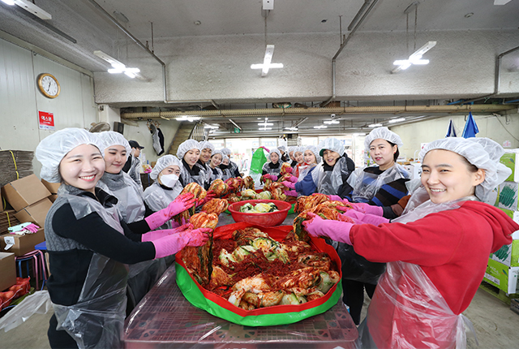

와 제 롤모델이 잡스에요!!! 아이폰 첫 출시되고 나서부터 계속 아이폰 쓰고 있는데 잡스가 너무 그리워요ㅠㅠ 지금은 돈만 벌려고 하는 것 같아서 디자인 발전도 없고ㅠㅠ와 제 롤모델이 잡스에요!!! 아이폰 첫 출시되고 나서부터 계속 아이폰 쓰고 있는데 잡스가 너무 그리워요ㅠㅠ 지금은 돈만 벌려고 하는 것 같아서 디자인 발전도 없고ㅠㅠ와 제 롤모델이 잡스에요!!! 아이폰 첫 출시되고 나서부터 계속 아이폰 쓰고 있는데 잡스가 너무 그리워요ㅠㅠ 지금은 돈만 벌려고 하는 것 같아서 디자인 발전도 없고ㅠㅠ와 제 롤모델이 잡스에요!!! 아이폰 첫 출시되고 나서부터 계속 아이폰 쓰고 있는데 잡스가 너무 그리워요ㅠㅠ 지금은 돈만 벌려고 하는 것 같아서 디자인 발전도 없고ㅠㅠ와 제 롤모델이 잡스에요!!! 아이폰 첫 출시되고 나서부터 계속 아이폰 쓰고 있는데 잡스가 너무 그리워요ㅠㅠ 지금은 돈만 벌려고 하는 것 같아서 디자인 발전도 없고ㅠㅠ
HMM 인사이드
어려운 이웃에게
김장김치로
따뜻한 마음 전달
김장김치로
따뜻한 마음 전달

현대상선이 어려운 이웃을 위해 다각적인 사회공헌 활동을 펼치고 있다. 지난 11월 2일
동절기 난방 연료 지원을 위한 ‘연탄 나눔’ 활동에 이어 11월 23일에 진행된 ‘사랑의 김장 나눔’ 활동까지,
특히 이번 ‘사랑의 김장 나눔’ 행사는 임직원들이 직접 김장김치를 담가 어려운 이웃에게 전달하여 더욱 뜻깊었다.
글·사진
유진 사원(대외협력실)
현상인들이 수협직판장에 모인 이유
끼니마다 한국인의 식탁에 빠지지 않고 등장하는 것이 바로 ‘김치’다. 제철에 수확한 배추와 각종 양념이 버무려진 소, 감칠맛을 더해주는 액젓이 어우러진 김치는 추운 겨울 우리의 밥상을 든든하게 책임진다. 많은 사람은 김장철이 되면 ‘김장’을 하지만, 우리 주변에는 여건이 안돼 김장을 할 수 없는 이웃들도 있다. 현대상선은 도움의 손길이 필요한 이들을 위해 ‘사랑의 김장 나눔’ 행사를 진행한 것이다.
강서구 외발산동에 위치한 수협직판장에서 진행된 이번 행사는 30여 명의 현대상선 임직원들이 자발적으로 참여했으며, 비용은 직원들의 ‘급여 끝전 모으기’ 등으로 마련되었다. 이날 사랑의 김장 나눔 활동을 위해 마련된 배추는 무려 300kg(약 150포기). 서울시 양천구 내 소외계층 50가구에 전달될 양이다. 한국인의 힘이라 불리는 김치를 통해 소외된 계층에 따듯한 온기를 전해주는 ‘사랑의 김장 나눔’ 행사, 그 훈훈했던 현장 속으로 들어가 보자.
01, 02앞치마와 머릿수건, 고무장갑으로 무장하는 현상인들
따뜻한 마음이 모여 300kg 김치도 뚝딱!
정오 무렵부터 시작된 ‘사랑의 김치 나눔’ 행사장에 삼삼오오 모여든 현상인들. 코끝 시린 쌀쌀한 날씨에도 불구하고 김장 작업을 하기 위해 모인 현상인들은 현장에 도착해 곧바로 외투를 벗어 던지고 앞치마와 머릿수건, 고무장갑으로 무장하기 시작했다. 봉사자들의 따뜻한 마음만큼이나 중요한 것이 바로 위생이기 때문이다. 각자 위생상태를 다시 한 번 점검한 뒤 본격적으로 김장이 시작되었다.
효율적인 작업을 위해 현상인들은 ‘준비 작업조’, ‘김치 작업조(일명 김칫소 넣기조)’, ‘포장 작업조’ 이렇게 3조로 나뉘어 김장을 진행하였다. 준비 작업조는 김칫소를 넣기 전 소금에 절인 배추를 적당한 크기로 자르는 역할을 맡았으며, 김치 작업조는 각종 양념이 버무려진 소를 절인 배춧잎에 넣는 작업을 수행하였다. 마지막으로 포장 작업조가 만든 김치를 예쁘게 모양을 잡아 봉투에 잘게 나누고 이를 다시 상자에 포장하는 작업까지 완료하면 끝!
03준비 작업조는 김치소를 넣기 전 소금에 절인 배추를 적당한 크기로 잘랐다
04-06김치 작업조는 각종 양념이 버무려진 소를 절인 배춧잎에 넣는 작업을 수행했다
많은 양의 김치를 만들기 위해서 빠르게 속도를 내면서도 ‘맛’을 놓칠 수 없기에 중간중간 시식해보는 것도 잊지 않았다. 2시간쯤 흘렀을까. 어느덧 현상인들의 능숙한 손놀림으로 수북이 쌓여있던 배추는 점차 붉은색 김치로 변해갔고, 현상인들의 얼굴엔 어느새 얼굴엔 땀방울이 송골송골 맺혔지만 흐뭇한 미소가 만연했다. 그렇게 완성된 김치는 박스에 포장되어 현상인들의 정성과 마음이 함께 전달되길 기다리고 있었다.
07-09포장 작업조는 만든 김치를 예쁘게 모양을 잡아 봉투에 잘게 나누고 이를 다시 박스에 포장했다
“따듯한 겨울 나는 데 도움 되길”
자원봉사자로 참석한 컨테이너항로기획팀 장소영 사원은 “배추를 비롯한 김장 재료값이 많이 올라 어려운 이웃들에게는 경제적으로 부담이 됐을 텐데, 작은 정성이지만 따뜻한 겨울을 나는 데 도움이 됐으면 좋겠네요”고 말했다. 또 컨테이너항로기획팀 이주은 사원은 “집에서는 김장을 따로 하지 않아 기회가 없었는데, 봉사활동으로 김장도 해보고 지역의 어려운 분들께 제가 처음으로 만든 김치를 전달할 수 있어 더 뿌듯하네요”라며 참여 소감을 전하기도 했다.
올겨울은 어느 때보다 매서운 한파가 찾아올 것이라고 한다. 이날 모인 현상인들의 따뜻한 마음이 우리 사회 곳곳에 전달된다면, 매서운 추위도 그렇게 혹독하지만은 않을 것이다. 현대상선은 앞으로도 지역의 어려운 이웃과 소외계층을 위한 도움의 손길을 지속적으로 전할 예정이다.
10김장을 모두 마치고 기념사진 한컷!
-
최고예요
322
-
좋아요
322
-
슬퍼요
322
-
그저 그래요
322
-
화나요
322